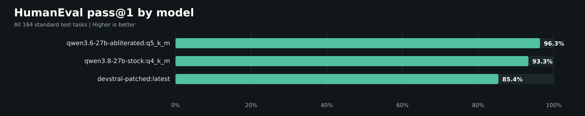
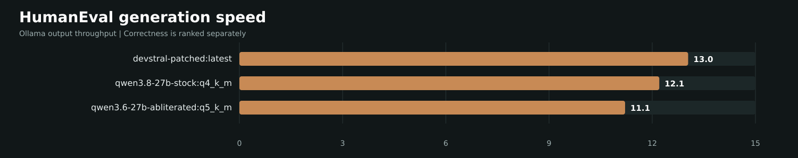

Started: 2026-09-19T12:28:46.822608-04:00 | State: complete | Completed: 492/492


| Rank | Model | Pass@1 | Passed | Errors | tok/s |
|---|---|---|---|---|---|
| 1 | qwen3.6-27b-abliterated:q5_k_m | 96.3% | 158/164 | 0 | 11.14 |
| 2 | qwen3.8-27b-stock:q4_k_m | 93.3% | 153/164 | 0 | 12.13 |
| 3 | devstral-patched:latest | 85.4% | 140/164 | 0 | 12.96 |
All 164 OpenAI HumanEval test tasks, one deterministic generation per model, temperature 0, seed 42, thinking disabled. Generated code is executed with the dataset tests inside a network-isolated bubblewrap sandbox. This is pass@1; no retries are used to improve incorrect solutions.